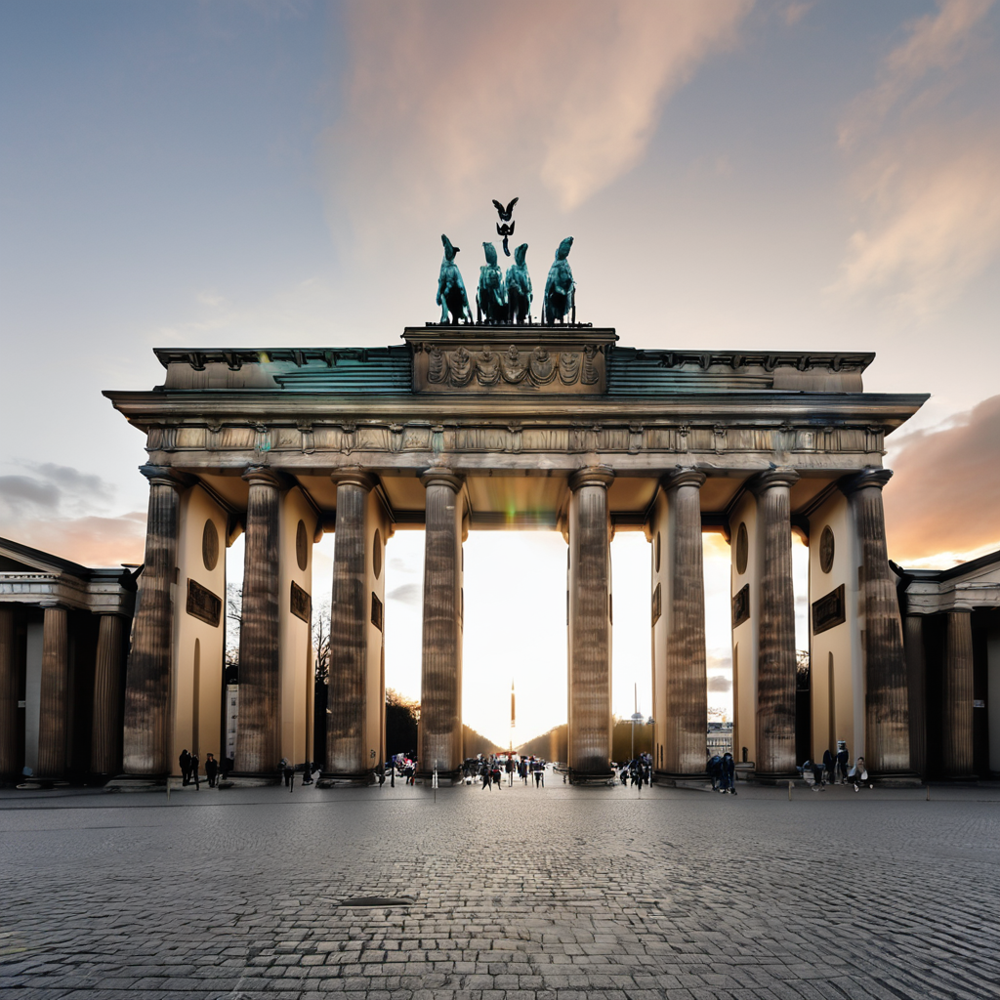
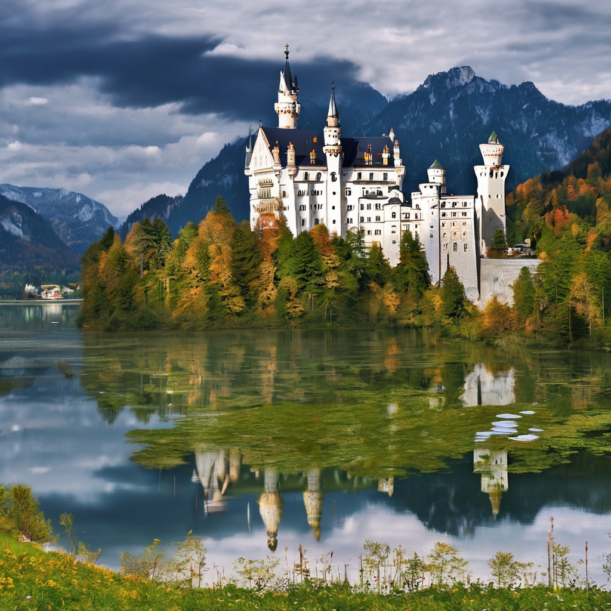
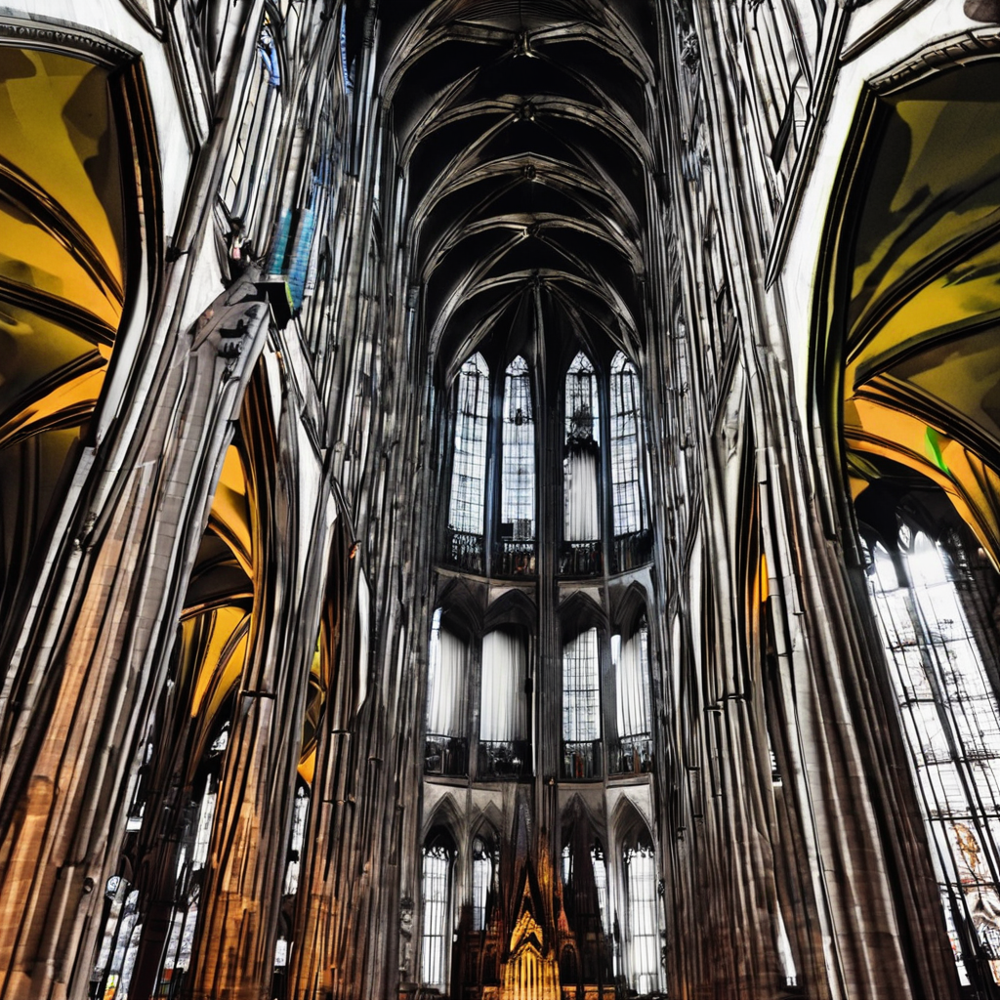
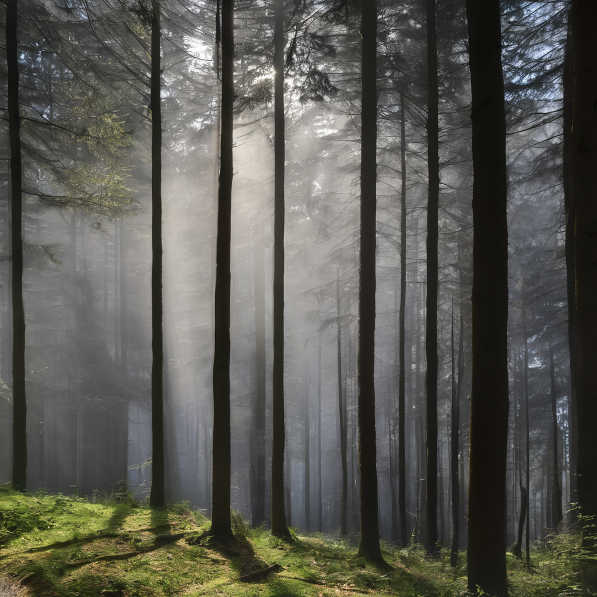

Chris's traveling suggestions - Germany
Germany, located in Central Europe, is known for its rich history, diverse culture, and stunning landscapes. From the iconic Brandenburg Gate in Berlin to the fairytale Neuschwanstein Castle in Bavaria, Germany offers a blend of modern innovation and traditional charm. Renowned for its beer, festivals, and picturesque countryside, it captivates visitors year-round.

1. Brandenburg Gate, Berlin
The Brandenburg Gate (Brandenburger Tor) is an iconic symbol of Berlin and a must-visit landmark for tourists. Constructed in the late 18th century, this neoclassical monument served as a city gate and has witnessed significant historical events, including the fall of the Berlin Wall. Standing at 26 meters tall, the gate features twelve Doric columns and is flanked by the impressive Quadriga statue, representing peace. Visitors can enjoy the vibrant atmosphere of Pariser Platz, where the gate serves as a backdrop for various cultural events and celebrations throughout the year. 
2. Neuschwanstein Castle, Bavaria
Nestled in the picturesque Bavarian Alps, Neuschwanstein Castle is one of the most photographed castles in the world. Commissioned by King Ludwig II in the 19th century, this fairy-tale castle is renowned for its stunning architecture and breathtaking views of the surrounding landscape. The interior is adorned with intricate murals and lavish furnishings, reflecting the Romantic style that inspired its creation. Visitors can explore the castle's opulent rooms and take guided tours, while the nearby hiking trails offer spectacular vistas of the castle against the backdrop of lush forests and mountains. 
3. Cologne Cathedral, Cologne
Cologne Cathedral (Kölner Dom) is a breathtaking Gothic masterpiece and a UNESCO World Heritage Site. It is one of the tallest cathedrals in Europe, with its twin spires soaring to 157 meters. Construction began in 1248 and took over six centuries to complete, resulting in a stunning blend of architectural styles. Inside, visitors can admire the magnificent stained glass windows and the Shrine of the Three Kings, believed to house the relics of the Magi. The cathedral's location along the Rhine River makes it a perfect spot for leisurely strolls and enjoying the vibrant atmosphere of Cologne. 